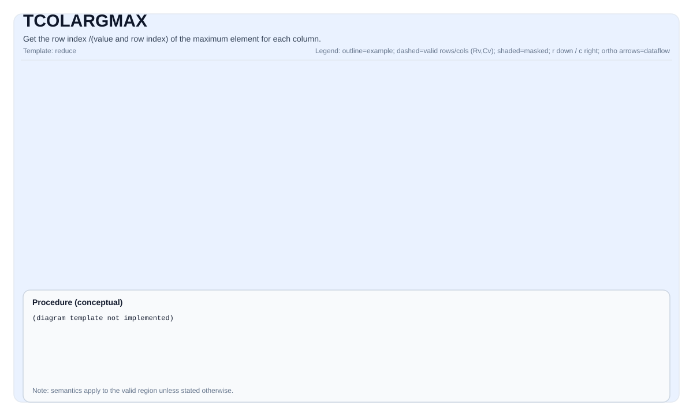

TCOLARGMAX¶
指令示意图¶

简介¶
获取每列最大值对应行索引。同时提供值+索引模式，可同时返回每列的最大值及其行索引。
数学语义¶
纯索引模式¶
设 R = src.GetValidRow() 和 C = src.GetValidCol()。对 0 <= j < C：
\[ \mathrm{dstIdx}_{0,j} = \underset{0 \le i < R}{\operatorname{argmax}} \; \mathrm{src}_{i,j} \]
值 + 索引模式¶
\[ \mathrm{dstVal}_{0,j} = \max_{0 \le i < R} \mathrm{src}_{i,j} \]
\[ \mathrm{dstIdx}_{0,j} = \underset{0 \le i < R}{\operatorname{argmax}} \; \mathrm{src}_{i,j} \]
汇编语法¶
纯索引模式¶
同步形式：
%dstIdx = tcolargmax %src : !pto.tile<...> -> !pto.tile<...>IR Level 1（SSA）：
%dstIdx = pto.tcolargmax %src, %tmp : (!pto.tile<...>, !pto.tile<...>) -> !pto.tile<...>IR Level 2（DPS）：
pto.tcolargmax ins(%src, %tmp : !pto.tile_buf<...>, !pto.tile_buf<...>) outs(%dstIdx : !pto.tile_buf<...>)值 + 索引模式¶
同步形式：
%dstVal, %dstIdx = tcolargmax %src : !pto.tile<...> -> !pto.tile<...>, !pto.tile<...>IR Level 1（SSA）：
%dstVal, %dstIdx = pto.tcolargmax %src, %tmp : (!pto.tile<...>, !pto.tile<...>) -> (!pto.tile<...>, !pto.tile<...>)IR Level 2（DPS）：
pto.tcolargmax ins(%src, %tmp : !pto.tile_buf<...>, !pto.tile_buf<...>) outs(%dstVal, %dstIdx : !pto.tile_buf<...>, !pto.tile_buf<...>)C++内建接口¶
声明于 include/pto/common/pto_instr.hpp：
公共包含头为
<pto/pto-inst.hpp>，内部声明位于pto/common/pto_instr.hpp。
纯索引模式（3参数）¶
template <typename TileDataOut, typename TileDataIn, typename TileDataTmp, typename... WaitEvents>
PTO_INST RecordEvent TCOLARGMAX(TileDataOut &dst, TileDataIn &src, TileDataTmp &tmp, WaitEvents &...events)值 + 索引模式（4参数）¶
template <typename TileDataOutVal, typename TileDataOutIdx, typename TileDataIn, typename TileDataTmp,
typename... WaitEvents>
PTO_INST RecordEvent TCOLARGMAX(TileDataOutVal& dstVal, TileDataOutIdx& dstIdx, TileDataIn& src, TileDataTmp& tmp,
WaitEvents&... events);约束¶
通用约束或检查¶
dstIdx和src必须为TileType::Vec。src可使用ND或DN的非分形布局（SLayout::NoneBox）。BLayout可为RowMajor（与SLayout::NoneBox正交；示例中省略SLayout时默认为SLayout::NoneBox）。dstIdx必须使用标准ND布局：行主且非分形（BLayout::RowMajor、SLayout::NoneBox）。- 支持的索引目标元素类型：
uint16_t、int16_t、uint32_t、int32_t（具体取决于源元素大小）。 - 运行时检查：
src.GetValidRow() != 0src.GetValidCol() != 0dstIdx.GetValidRow() == 1src.GetValidCol() == dstIdx.GetValidCol()
纯索引模式（3参数）¶
Atlas A2/A3 训练系列产品/Atlas A2/A3 推理系列产品实现检查¶
- 支持的源元素类型：
half、float、uint16_t、uint32_t。 tmp的元素类型必须与src一致。tmp用作索引跟踪和当前比较值的临时存储。
Ascend 950PR/Ascend 950DT实现检查¶
- 支持的源元素宽度为8位、16位或32位，覆盖
int8_t、uint8_t、int16_t、uint16_t、int32_t、uint32_t、half、float。 - 接口接收
tmp，但实现实际并不使用它。
值 + 索引模式（4参数）¶
除通用约束外：
dstVal必须为TileType::Vec，使用标准ND布局（行主、非分形）。dstVal元素类型必须与源元素类型TileDataIn::DType一致。- 不支持 8位源类型。
- 运行时检查：
dstVal.GetValidRow() == 1dstVal.GetValidCol() != 0src.GetValidCol() == dstVal.GetValidCol()dstVal.GetValidRow() == dstIdx.GetValidRow()dstVal.GetValidCol() == dstIdx.GetValidCol()
Atlas A2/A3 训练系列产品/Atlas A2/A3 推理系列产品实现检查¶
- 支持的源元素类型：
half、float、uint16_t、uint32_t。 - 当源元素大小为2字节（
half、uint16_t）时：dstIdx元素类型必须为uint16_t或int16_t。 - 当源元素大小为4字节（
float、uint32_t）时：dstIdx元素类型必须为uint32_t或int32_t。 tmp的元素类型必须与src一致。tmp用作临时存储；对half输入类型，内部执行s16->f16->s32转换路径。
Ascend 950PR/Ascend 950DT实现检查¶
- 源元素大小必须为16位或32位（
sizeof(T) != 1）。 - 当源元素大小为2字节（
half、int16_t、uint16_t）时：dstIdx元素类型必须为uint16_t或int16_t。 - 当源元素大小为4字节（
float、int32_t、uint32_t）时：dstIdx元素类型必须为uint32_t或int32_t。 - 接口接收
tmp，但实现实际并不使用它。
Atlas A2/A3 训练系列产品/Atlas A2/A3 推理系列产品 tmp 临时Tile相关说明¶
- Atlas A2/A3 训练系列产品/Atlas A2/A3 推理系列产品实现中
tmp始终被使用，但使用程度取决于源元素类型和模式：
| 源类型 | 模式 | 区域0（行索引） | 区域1（比较值） | 区域2（argmax索引） |
|---|---|---|---|---|
half |
纯索引 | tmp |
tmp |
tmp |
half |
值+索引 | tmp |
tmp |
dstIdx |
float |
纯索引 | tmp |
dstIdx |
dstIdx |
float |
值+索引 | tmp |
dstIdx |
dstIdx |
tmpTile的数据类型必须与src的数据类型一致。tmpTile在单行内被划分为最多三个区域：- 区域0（
[0, tmpGapEles)）：当前行索引计数器（每行递增）。始终存储在tmp中。 - 区域1（
[tmpGapEles, 2 * tmpGapEles)）：当前最大值元素，用于比较。half类型存储在tmp中；float类型存储在dstIdx中。 - 区域2（
[2 * tmpGapEles, 3 * tmpGapEles)）：argmax索引结果。仅在half+ 纯索引模式下存储在tmp中；其他情况存储在dstIdx中。 tmpGapEles的确定方式：- 当
srcValidCol >= elemPerRpt时：tmpGapEles = elemPerRpt。 - 当
srcValidCol < elemPerRpt时：tmpGapEles = ceil(srcValidCol / elemPerBlock) * elemPerBlock。 - 对于
half+ 纯索引模式（tmp使用量最大的情况），当src较小时可直接将tmpTile大小设为与src相同；也可按以下公式算出tmpTile所需stride：
repeats = ceil(validCol / elementPerRepeat)
stride = ceil(repeats * 2 / elementPerBlock) * elementPerBlock + ceil(repeats / elementPerBlock) * elementPerBlock对于其他类型/模式组合，tmp 中仅需要区域0，因此 tmp 跨度为 tmpGapEles 即可。
- 在纯索引模式下，若输入为
half类型，tmp区域2的数据将经过s16->f16->s32转换后才写入dstIdx。
Ascend 950PR/Ascend 950DT tmp 临时Tile相关说明¶
- Ascend 950PR/Ascend 950DT实现中
tmp临时Tile 在两种模式下均不使用。Ascend 950PR/Ascend 950DT使用基于向量寄存器的计算方式（__VEC_SCOPE__），不需要临时Tile存储。 tmp在C++内建接口签名中保留，仅为了与Atlas A2/A3 训练系列产品/Atlas A2/A3 推理系列产品的API兼容。
示例¶
纯索引模式¶
自动（Auto）¶
#include <pto/pto-inst.hpp>
using namespace pto;
void example_auto() {
using SrcT = Tile<TileType::Vec, float, 16, 256, BLayout::RowMajor, -1, -1>;
using DstT = Tile<TileType::Vec, uint32_t, 1, 256, BLayout::RowMajor, -1, -1>;
using TmpT = Tile<TileType::Vec, float, 1, 32, BLayout::RowMajor, -1, -1>;
SrcT src(16, 255);
DstT dst(1, 255);
TmpT tmp(1, 32);
TCOLARGMAX(dst, src, tmp);
}手动（Manual）¶
#include <pto/pto-inst.hpp>
using namespace pto;
void example_manual() {
using SrcT = Tile<TileType::Vec, float, 16, 256, BLayout::RowMajor, -1, -1>;
using DstT = Tile<TileType::Vec, uint32_t, 1, 256, BLayout::RowMajor, -1, -1>;
using TmpT = Tile<TileType::Vec, float, 1, 32, BLayout::RowMajor, -1, -1>;
SrcT src(16, 255);
DstT dst(1, 255);
TmpT tmp(1, 32);
TASSIGN(src, 0x0);
TASSIGN(dst, 0x1000);
TASSIGN(tmp, 0x2000);
TCOLARGMAX(dst, src, tmp);
}值 + 索引模式¶
自动（Auto）¶
#include <pto/pto-inst.hpp>
using namespace pto;
void example_auto_val_idx() {
using SrcT = Tile<TileType::Vec, float, 16, 256, BLayout::RowMajor, -1, -1>;
using DstValT = Tile<TileType::Vec, float, 1, 256, BLayout::RowMajor, -1, -1>;
using DstIdxT = Tile<TileType::Vec, int32_t, 1, 256, BLayout::RowMajor, -1, -1>;
using TmpT = Tile<TileType::Vec, float, 1, 32, BLayout::RowMajor, -1, -1>;
SrcT src(16, 255);
DstValT dstVal(1, 255);
DstIdxT dstIdx(1, 255);
TmpT tmp(1, 32);
TCOLARGMAX(dstVal, dstIdx, src, tmp);
}手动（Manual）¶
#include <pto/pto-inst.hpp>
using namespace pto;
void example_manual_val_idx() {
using SrcT = Tile<TileType::Vec, float, 16, 256, BLayout::RowMajor, -1, -1>;
using DstValT = Tile<TileType::Vec, float, 1, 256, BLayout::RowMajor, -1, -1>;
using DstIdxT = Tile<TileType::Vec, int32_t, 1, 256, BLayout::RowMajor, -1, -1>;
using TmpT = Tile<TileType::Vec, float, 1, 32, BLayout::RowMajor, -1, -1>;
SrcT src(16, 255);
DstValT dstVal(1, 255);
DstIdxT dstIdx(1, 255);
TmpT tmp(1, 32);
TASSIGN(src, 0x0);
TASSIGN(dstVal, 0x1000);
TASSIGN(dstIdx, 0x2000);
TASSIGN(tmp, 0x3000);
TCOLARGMAX(dstVal, dstIdx, src, tmp);
}汇编示例（ASM）¶
纯索引自动模式¶
# 自动模式：由编译器/运行时负责资源放置与调度。
%dstIdx = pto.tcolargmax %src, %tmp : (!pto.tile<...>, !pto.tile<...>) -> !pto.tile<...>纯索引手动模式¶
# 手动模式：先显式绑定资源，再发射指令。
# pto.tassign %arg0, @tile(0x1000)
# pto.tassign %arg1, @tile(0x2000)
%dstIdx = pto.tcolargmax %src, %tmp : (!pto.tile<...>, !pto.tile<...>) -> !pto.tile<...>值 + 索引自动模式¶
# 自动模式：由编译器/运行时负责资源放置与调度。
%dstVal, %dstIdx = pto.tcolargmax %src, %tmp : (!pto.tile<...>, !pto.tile<...>) -> (!pto.tile<...>, !pto.tile<...>)值 + 索引手动模式¶
# 手动模式：先显式绑定资源，再发射指令。
# pto.tassign %arg0, @tile(0x1000)
# pto.tassign %arg1, @tile(0x2000)
# pto.tassign %arg2, @tile(0x3000)
%dstVal, %dstIdx = pto.tcolargmax %src, %tmp : (!pto.tile<...>, !pto.tile<...>) -> (!pto.tile<...>, !pto.tile<...>)PTO汇编形式¶
# 纯索引
%dstIdx = tcolargmax %src : !pto.tile<...> -> !pto.tile<...>
# 值 + 索引
%dstVal, %dstIdx = tcolargmax %src : !pto.tile<...> -> !pto.tile<...>, !pto.tile<...>
# IR Level 2 (DPS) - 纯索引
pto.tcolargmax ins(%src, %tmp : !pto.tile_buf<...>, !pto.tile_buf<...>) outs(%dstIdx : !pto.tile_buf<...>)
# IR Level 2 (DPS) - 值 + 索引
pto.tcolargmax ins(%src, %tmp : !pto.tile_buf<...>, !pto.tile_buf<...>) outs(%dstVal, %dstIdx : !pto.tile_buf<...>, !pto.tile_buf<...>)